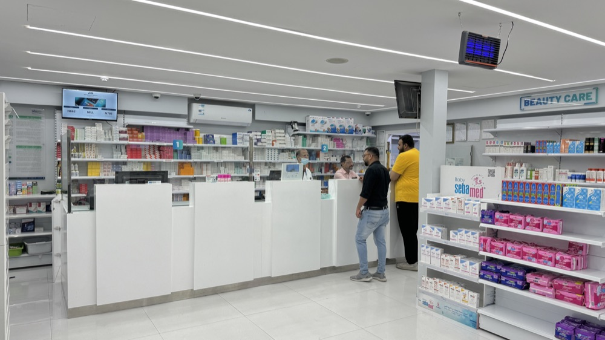

Emergency response and comprehensive healthcare services for all your medical needs. Not sure which service you need? Ask our AI assistant.
Ready to connect
Comprehensive Healthcare Services
We provide comprehensive healthcare services and medical examinations that meet international standards, with digital integration across government platforms for seamless processing and certification.
Industrial Medical Services
Pre-Employment Medical
Pre-employment medical examinations for major corporations such as Aramco, SABIC, SAIPEM, SADARA and others. SASO and international standards-compliant screening ensure workforce health and safety compliance.
Services
Complete health assessment for new employees
Fitness for duty certification for Aramco, SABIC, SAIPEM, SADARA
Occupational health screening for industrial sectors
Vision and hearing assessments
Drug and alcohol testing
Vaccination status verification
Health risk factor identification
Digital certification via Qiwa/Sehhaty
Available at All Branches
Licensing Medical
Iqama (Residency) Medical
Medical examination for expatriate residency applications and renewals, ensuring compliance with Saudi immigration health requirements and MOH standards.
Services
Complete infectious disease screening
Chest X-ray for tuberculosis detection
Blood tests for HIV, Hepatitis B & C
Syphilis screening
General health assessment
Digital results via Sehhaty system
Integration with Absher portal
MOFA-approved certification
Available at All Branches
Licensing Medical
Driving License Medical
Specialized medical examination for driving license applications, focusing on vision, physical coordination, and fitness to operate vehicles safely.
Services
Comprehensive vision testing
Hearing assessment
Physical coordination evaluation
Neurological screening
Cardiovascular fitness check
Blood pressure monitoring
Diabetes screening
Moroor system integration
Available at All Branches
Renewal Services
Periodic (Renewal) Medical
Regular health check-ups for license renewals and ongoing fitness assessments for various professional and regulatory requirements.
Services
Annual fitness assessments
Professional license renewals
Health status updates
Chronic condition monitoring
Vision and hearing retesting
Updated vaccination records
Digital certificate updates
Compliance verification
Available at All Branches
Specialized Services
Food Handler Medical Check Card
Specialized health screening for food service industry workers, ensuring food safety standards and public health protection.
Services
Infectious disease screening
Skin condition examination
Respiratory health assessment
Gastrointestinal health check
Vaccination verification
Personal hygiene assessment
Food safety certification
Municipality compliance
Available at All Branches
Travel Medical
Umrah/Hajj Medical
Comprehensive health clearance for pilgrims traveling for Umrah or Hajj, meeting international travel health requirements.
Services
Complete physical examination
Required vaccinations
International health certificate
Chronic disease management
Travel fitness assessment
Emergency contact setup
Health insurance verification
WHO compliance documentation
Available at All Branches
General Services
Medical Fitness General
General health assessments for various purposes including employment, education, sports participation, and personal health monitoring.
Services
Complete physical examination
Basic laboratory tests
Vital signs monitoring
General health screening
Lifestyle assessment
Preventive care recommendations
Health education counseling
Wellness program enrollment
Available at All Branches
International Services
Visa Medical
International medical examinations for visa applications, meeting destination country health requirements and embassy standards.
Services
Country-specific health screening
Embassy-approved examinations
International vaccination records
Chest X-ray reports
Blood test panels
Medical history documentation
Consular health certificates
Immigration medical forms
Available at All Branches
Professional Services
Medical Officer General
Comprehensive health services for medical officers and healthcare professionals, ensuring fitness for medical practice and patient care.
Services
Professional fitness assessment
Occupational health screening
Infection control clearance
Mental health evaluation
Continuing education verification
License renewal support
Workplace safety assessment
Professional liability clearance
Available at All Branches
Digital Integration & Certification
Our medical services are fully integrated with Saudi government digital platforms to ensure seamless processing, instant certification, and regulatory compliance.
Qiwa PlatformSehhaty SystemAbsher PortalMoroor System
Our Medical Departments
Explore our specialized medical departments and the comprehensive healthcare services we provide
GENERAL PRACTITIONER
Our General Practitioners (GPs) provide comprehensive primary care for individuals and families. With a focus on preventive healthcare, diagnosis, and treatment, they ensure early detection and effective management of illnesses.
DammamJubailQatif
INTERNIST
Our internists specialize in managing chronic and acute medical conditions, including diabetes, hypertension, respiratory disorders, and heart conditions. With an integrated approach to adult healthcare, our team ensures the best treatment strategies.
DammamJubailQatif
PEDIATRICS
Our Pediatricians provide specialized care for infants, children, and adolescents, covering routine check-ups, immunizations, and treatment of childhood illnesses. We focus on early diagnosis and holistic child development.
DammamJubailQatif
DERMATOLOGY
Our Dermatology Department offers advanced skin treatments, including laser therapy, acne management, pigmentation correction, hair loss treatments, and anti-aging solutions. We combine modern techniques with expert care to ensure healthy and radiant skin.
DammamJubailQatif
ENT
Our ENT specialists offer advanced diagnosis and treatment for hearing disorders, sinus problems, throat infections, and nasal conditions. With modern audiology and endoscopy equipment, our ENT team delivers personalized care for all ages.
DammamJubailQatif
GYNECOLOGY
We provide comprehensive women's healthcare, including prenatal and postnatal care, fertility treatments, menopause management, and gynecological surgeries. Our compassionate approach ensures personalized and comfortable care.
DammamJubailQatif
OPHTHALMOLOGY
Our Ophthalmology Department provides comprehensive eye care services, including vision correction, eye disease management, and surgical procedures. Using digital imaging and advanced diagnostic tools, we help patients achieve optimal eye health.
DammamJubailQatif
ORTHOPEDICS
Our Orthopedic specialists diagnose and treat musculoskeletal conditions, fractures, joint disorders, and back pain. With advanced imaging, physiotherapy support, and minimally invasive surgeries, we ensure effective recovery and mobility restoration.
DammamJubailQatif
DENTAL
Our Advanced Dental Care Center offers a comprehensive range of oral healthcare services, from routine check-ups to specialized dental treatments. Specialties include Orthodontics (Braces & Aligners), Endodontics (Root Canal Treatment), Implantology (Dental Implants), and Cosmetic & Restorative Dentistry.
DammamJubail
RADIOLOGY
Our Radiologists use high-resolution imaging technology to provide precise diagnosis for various conditions. Services include X-Ray and Ultrasound.
DammamJubail
Pharmacy Services
Professional pharmaceutical services with licensed pharmacists providing expert medication dispensing, consultation, and health monitoring across all our branches.
Available in DammamAvailable in JubailAvailable in Qatif

Complete Pharmaceutical Care
Modern pharmacy services with professional expertise
Our pharmacies are equipped with state-of-the-art facilities and staffed by licensed pharmacists who provide comprehensive medication services including prescription dispensing, health consultations, and wellness monitoring.
We maintain the highest standards of pharmaceutical care with quality assurance protocols, proper medication storage, and expert guidance to ensure your health and safety.